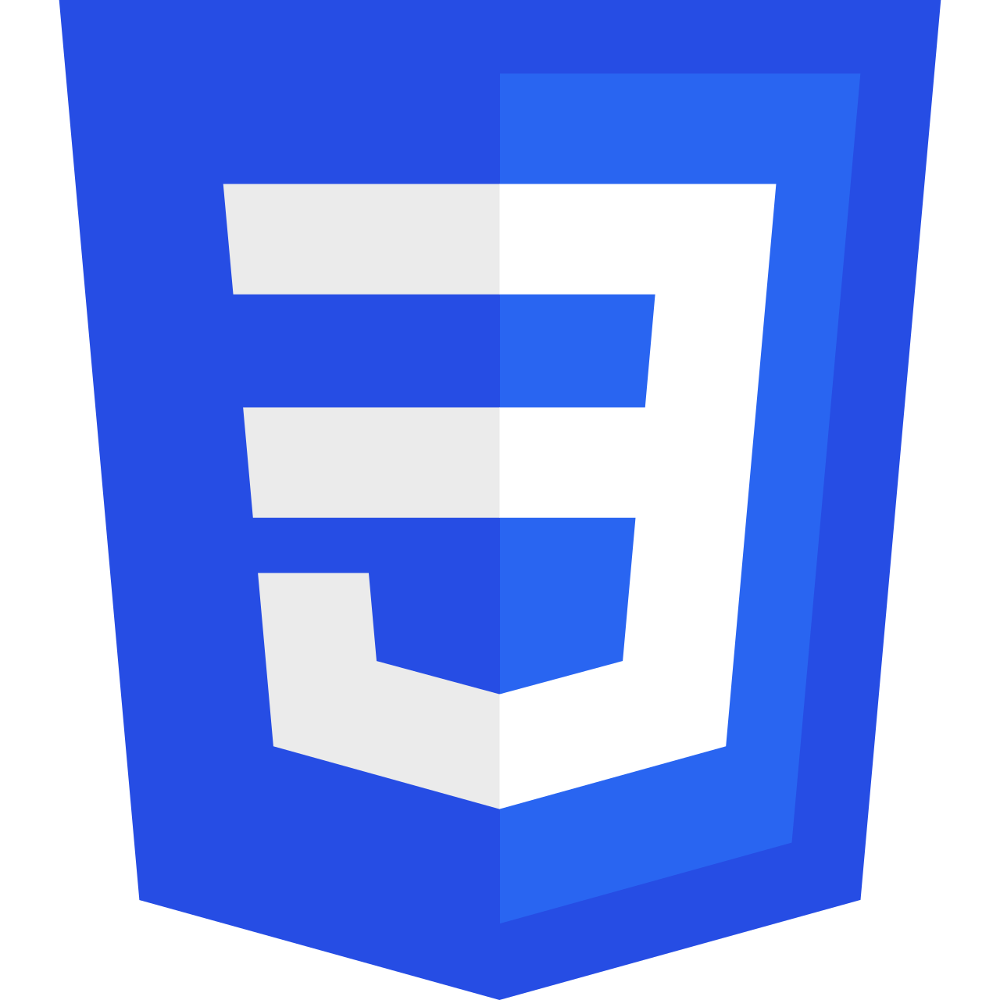

Baccalauréat
Obtention du Baccalauréat(série D) au Lycée Moderne G.O.K de Katiola
Bonjour, je suis
Je suis Dofougo Cyprien Yeo, alias DEV.YEO, étudiant en informatique et développeur web passionné. Je conçois des sites et applications web modernes et fonctionnels, tout en développant mes compétences en HTML, CSS, JavaScript et Python. Je m’intéresse également aux solutions informatiques, aux réseaux et aux technologies numériques.
L'informatique à votre portée,l'excellence pour votre réussite
Je suis Dofougo Cyprien Yeo, alias DEV.YEO, étudiant en informatique spécialisé dans le développement d'applications web. Passionné par les technologies numériques, je développe progressivement mes compétences pour concevoir des sites et des applications modernes, simples et utiles.
Je m'intéresse également aux solutions informatiques, aux réseaux et aux nouvelles technologies. Mon objectif est de continuer à apprendre, réaliser des projets concrets et évoluer professionnellement dans le domaine de l'informatique.

Structure et organisation des pages web.

Mise en forme et design des interfaces web.

Création d'interactions et de fonctionnalités dynamiques.

Programmation et développement d'applications.

Création rapide d'interfaces web responsives.
Bases des réseaux et des technologies informatiques.

Utilisation des outils d'IA pour apprendre, développer des solutions et améliorer ma productivité.


Bonne maîtrise de Microsoft Word, Excel et PowerPoint pour la création de documents, tableaux, présentations et travaux bureautiques.
Obtention du Baccalauréat(série D) au Lycée Moderne G.O.K de Katiola
Formation en développement d'applications, programmation, bases de données, réseaux, systèmes informatiques et analyse a l'IFS-ICK Bouaké
Statut : Admissible au BTS
Apprentissage continu du développement web, de la programmation et des réseaux informatiques à travers différentes plateformes et ressources spécialisées.
Formations et certifications dans les domaines de la programmation, du développement informatique et des réseaux.
Création d'un portfolio personnel en HTML, CSS et JavaScript pour présenter mes compétences et mes réalisations.
HTML5 • CSS3 • JavaScript
Je développe progressivement des projets web afin de renforcer mes compétences en développement front-end.
HTML5 • CSS3 • JavaScript • Python
Vous avez un projet ou une question ? Contactez-moi.
WhatsApp : Me contacter sur WhatsApp